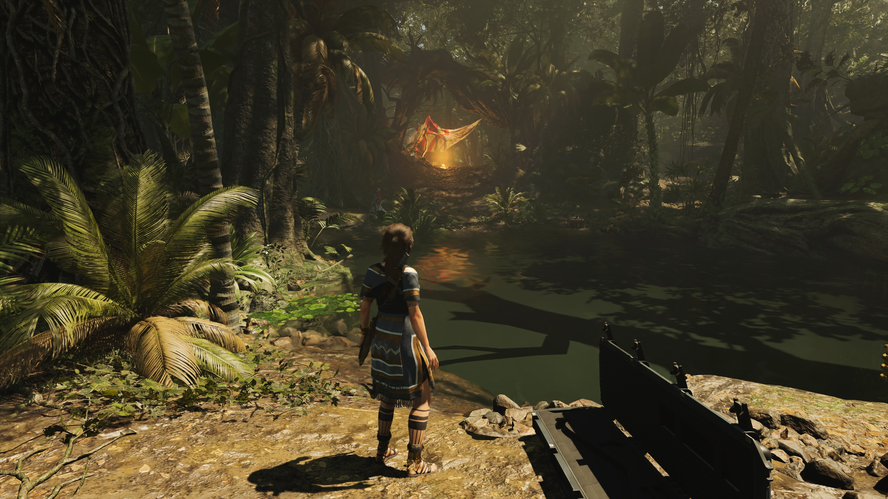
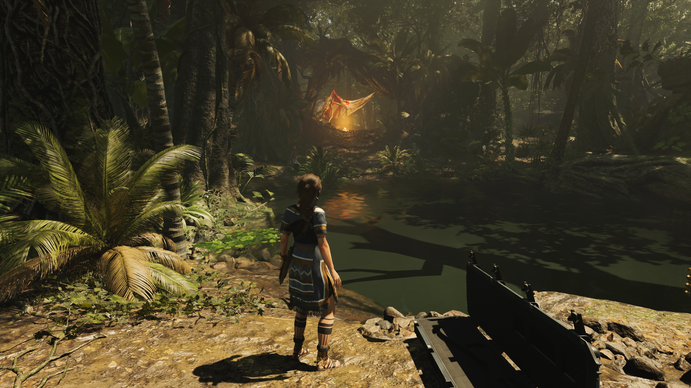

RTX (Ray-tracing) par NVidia:
Dans la technologie graphique, le Ray-tracing génère une image en traçant des rayons projetés par un plan d'image et en simulant ainsi les effets de sa rencontre sur d'autres objets virtuels. Cela permet de projeter des effets plus réalistes, correspondant plus aux propriétés du réel, tel que des bordures d'ombres moins prononcées avec la distance, et des reflets sur l'eau pouvant mouvoir. Tout cela peut se comparer aux techniques de pixelisation, qui priorise la performance plutôt que la précision.
Les jeux qui utilisent cette technologie sont majoritairement les plus récents, et issus de grosses sociétés de développement de jeux-vidéos. "Control", "BattleField V", ou encore "Shadow of the Tomb Raider" qui a été le premier jeu à utiliser le Ray tracing en 2018. Ils sont de bons exemples de prouesses visuelles.
 
